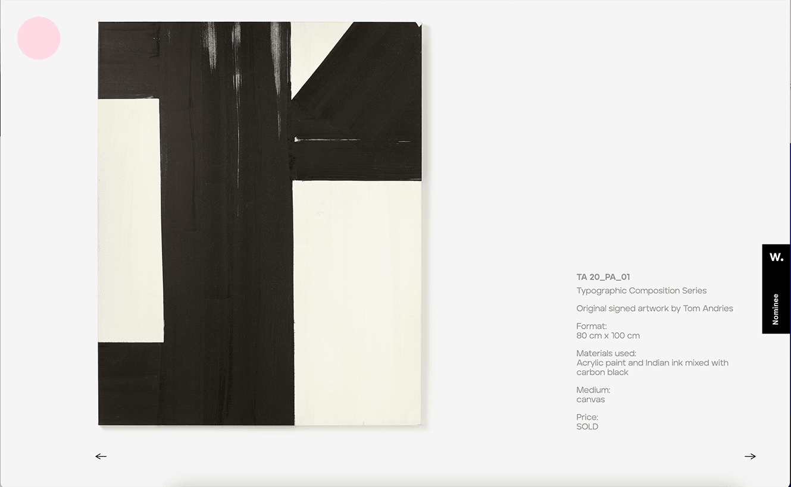
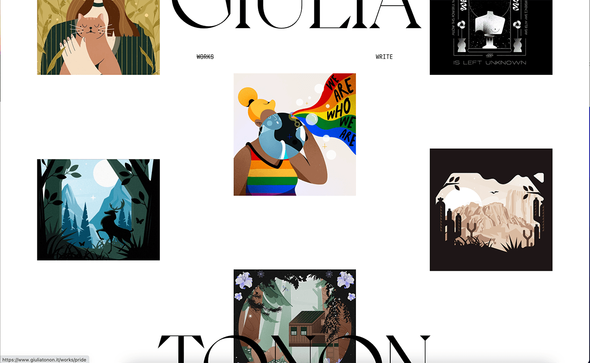

Project Summary
For the final project I will be updating the Every Picture Project, where I will continue to expand on the interface and create a more interesting experience for the user while they view illustrations and designs that I have made.
For the final project I will be updating the Every Picture Project, where I will continue to expand on the interface and create a more interesting experience for the user while they view illustrations and designs that I have made.
The first project that I found was Tom Andries’ portfolio website, which displays his work and provides details of each piece. The interface displays the photos vertically and when the user clicks on an image the image will zoom out to fit the screen and present further details about the project. I thought what worked well for the interface was the interaction that the user has when clicking the image and how there is a smooth transition that displays the details. One thing I found could be improved is finding a more simple way for the user to return to the home page. I think this part of the interface gets confusing and could negatively affect the user experience.
The second project I found was Giulia Tonon’s freelance portfolio, which also displays her work through a very creative interface. When you open the interface her work is displayed in three rows, the first and third row moves up while the second row moves down as the user scrolls down. The user can also hover over the images which will showcase a circle with a filter over the image, and when the image is clicked on the image zoomed in to fit the screen. I thought the creative interactions in the home page worked so well and created a fun user experience. The only part of the interface that I think needed improvement was the title of the website, which is cut in half on the top and bottom of the page and makes the name very difficult to read.
For this final project I want to expand on the user experience of the interface by providing more context for the user and create more of a narrative than before. My Every Picture Project is similar to the two projects I found because they are both portfolio websites that showcase work from the creators, and I am also displaying my work in my project. My interface will be different because I also want to include context that details more of the design process of each image. I will do this by including context such as my color schemes and reference images I used to help create my work.
For the overall look of the interface I want to elevate the layout in hopes that it will create a better user experience. My original layout vertically displayed the images, which was not that visually interesting. I want to adjust the layout by displaying the images horizontally instead of vertically in order to create more balance in the interface. The interface will also have buttons in order to navigate through the interface and create mor einteraction. For the colors I will continue to have the home page black and white until the user clicks on one of the images. When an image is clicked then that color scheme will be adapted to the layout of the interface.
For the final project I plan on keeping the interaction I had for the Every Photo project , which was a glitch effect when the user hovers over the images. I was inspired by Giulia Tonon’s portfolio, and considered including a circle that would display the color of the illustrations when the user hovers over the image. I think I will instead have the glitch display the color version of the image instead to hint that there is more to the images. I also want to create more complex transitions when the user clicks on the image and displays the context for the image.
My goal for the user experience in the final project is to create an interactive experience that will surprise and inform the users. I think the hover effect already provides a fun experience for the user, and helps to hint that there is possibly more to the images. When the user clicks the images the color change of the interface will create an element of excitement and anticipation for the user to see how the interface will look with different colors. I also want to inform the user and share more about the design process by showing references for images, color scheme, and the software used to create the images.